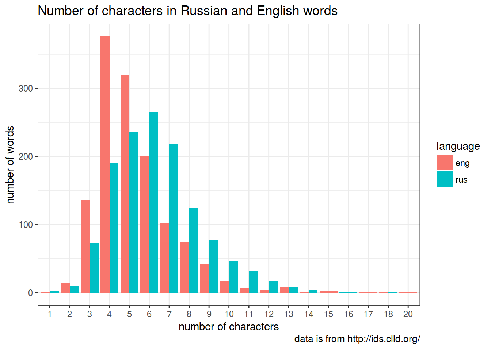
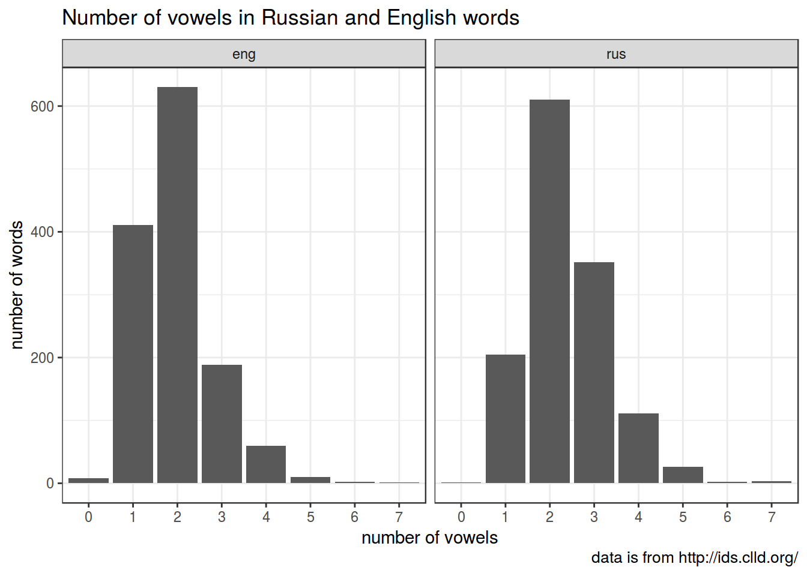
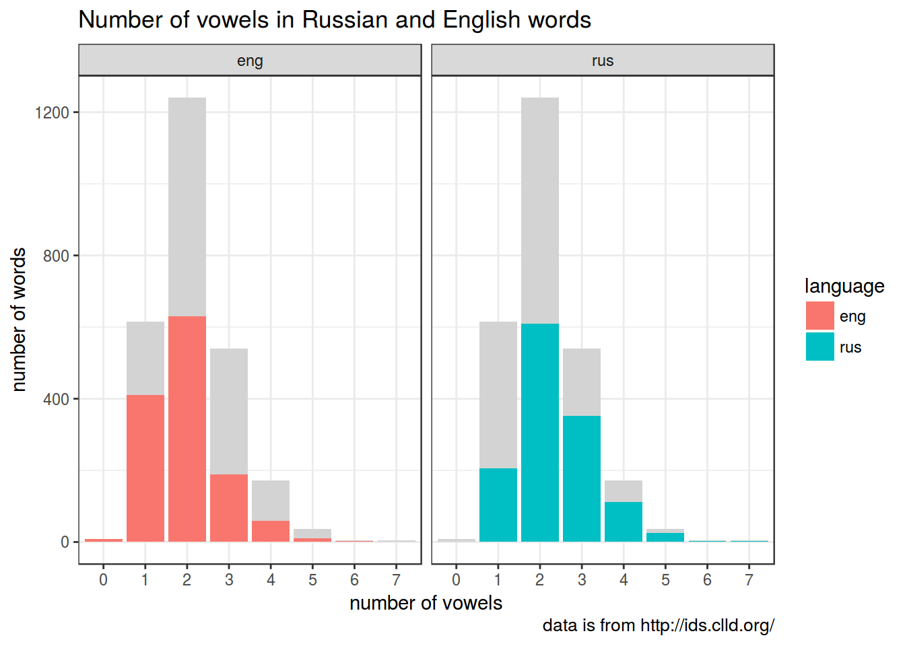
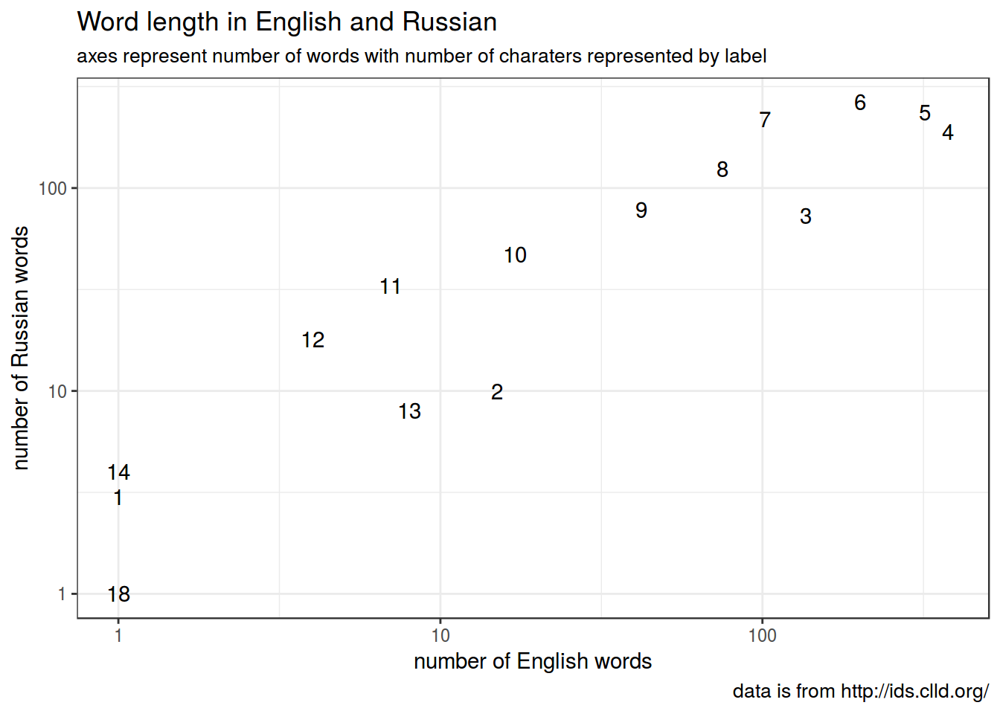

Data frame “flights”
# install.packages("nycflights13")
library(nycflights13)
library(tidyverse)
head(flights)## # A tibble: 6 x 19
## year month day dep_time sched_dep_time dep_delay arr_time
## <int> <int> <int> <int> <int> <dbl> <int>
## 1 2013 1 1 517 515 2 830
## 2 2013 1 1 533 529 4 850
## 3 2013 1 1 542 540 2 923
## 4 2013 1 1 544 545 -1 1004
## 5 2013 1 1 554 600 -6 812
## 6 2013 1 1 554 558 -4 740
## # ... with 12 more variables: sched_arr_time <int>, arr_delay <dbl>,
## # carrier <chr>, flight <int>, tailnum <chr>, origin <chr>, dest <chr>,
## # air_time <dbl>, distance <dbl>, hour <dbl>, minute <dbl>,
## # time_hour <dttm>dim(flights)## [1] 336776 19Some useful dplyr functions: filter(), slice(), arrange(), select(), distinct(), mutate(), summarise(), sample()
filter(flights, month == 1, day == 1) # cf. Basic R: flights[flights$month == 1 & flights$day == 1, ]## # A tibble: 842 x 19
## year month day dep_time sched_dep_time dep_delay arr_time
## <int> <int> <int> <int> <int> <dbl> <int>
## 1 2013 1 1 517 515 2 830
## 2 2013 1 1 533 529 4 850
## 3 2013 1 1 542 540 2 923
## 4 2013 1 1 544 545 -1 1004
## 5 2013 1 1 554 600 -6 812
## 6 2013 1 1 554 558 -4 740
## 7 2013 1 1 555 600 -5 913
## 8 2013 1 1 557 600 -3 709
## 9 2013 1 1 557 600 -3 838
## 10 2013 1 1 558 600 -2 753
## # ... with 832 more rows, and 12 more variables: sched_arr_time <int>,
## # arr_delay <dbl>, carrier <chr>, flight <int>, tailnum <chr>,
## # origin <chr>, dest <chr>, air_time <dbl>, distance <dbl>, hour <dbl>,
## # minute <dbl>, time_hour <dttm>(?) Find out how many flights there were on July 4? Dec 31? Dec 32? Use “|” to look for more than one date.
arrange(flights, year, month, day, desc(arr_delay)) # cf. Basic R: flights[order(flights$arr_delay, decreasing = TRUE), ]## # A tibble: 336,776 x 19
## year month day dep_time sched_dep_time dep_delay arr_time
## <int> <int> <int> <int> <int> <dbl> <int>
## 1 2013 1 1 848 1835 853 1001
## 2 2013 1 1 2343 1724 379 314
## 3 2013 1 1 1815 1325 290 2120
## 4 2013 1 1 1842 1422 260 1958
## 5 2013 1 1 2115 1700 255 2330
## 6 2013 1 1 2205 1720 285 46
## 7 2013 1 1 2006 1630 216 2230
## 8 2013 1 1 2312 2000 192 21
## 9 2013 1 1 1942 1705 157 2124
## 10 2013 1 1 1938 1703 155 2109
## # ... with 336,766 more rows, and 12 more variables: sched_arr_time <int>,
## # arr_delay <dbl>, carrier <chr>, flight <int>, tailnum <chr>,
## # origin <chr>, dest <chr>, air_time <dbl>, distance <dbl>, hour <dbl>,
## # minute <dbl>, time_hour <dttm>flight1 <- select(flights, year, month, day)Data frame “words”
# install.packages("tidyverse")
# or (if you have any problem with installation) use github repository:
## install.packages("devtools")
# library(devtools)
# install_github("tidyverse/tidyverse") # given that https://github.com/tidyverse/tidyvers is a path, quotation marks are obligatory
library(tidyverse)
words <- read_csv("https://goo.gl/a4xNwj")
words <- c(words$trans_english, words$trans_russian)
words <-sapply(words, function(x){unlist(strsplit(x, ",| "))[1]})Some useful functions: nchar(), grepl()

Here is a string that we will treat as vowels:
## [1] "e|u|i|o|a|у|е|ы|а|о|э|я|и|ю|ё"

